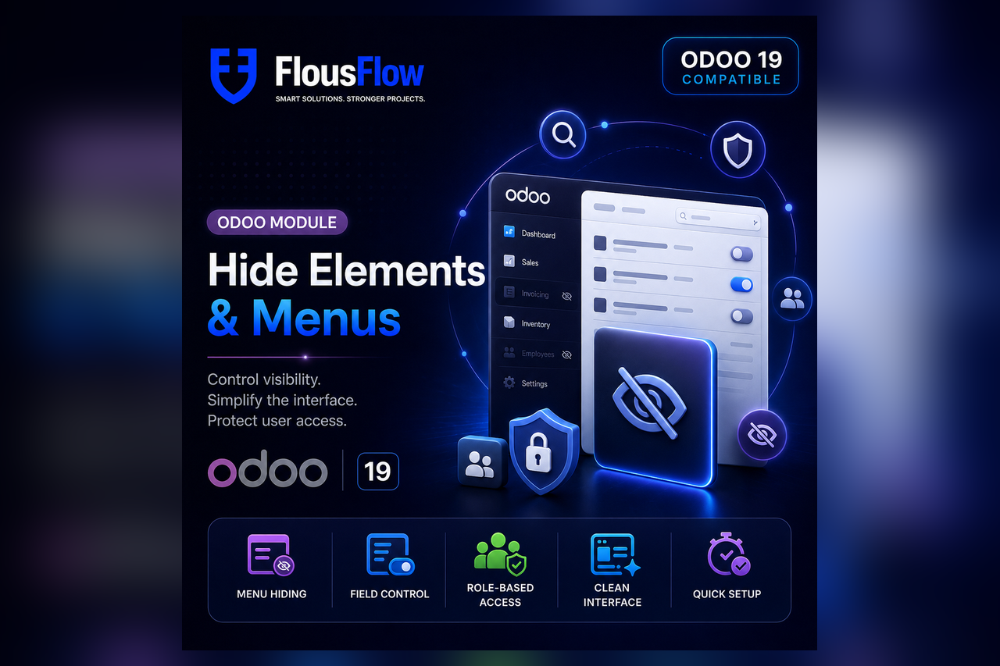
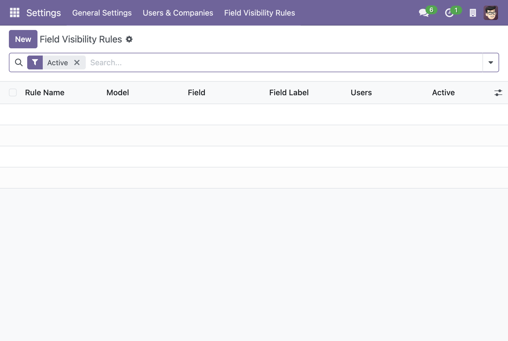
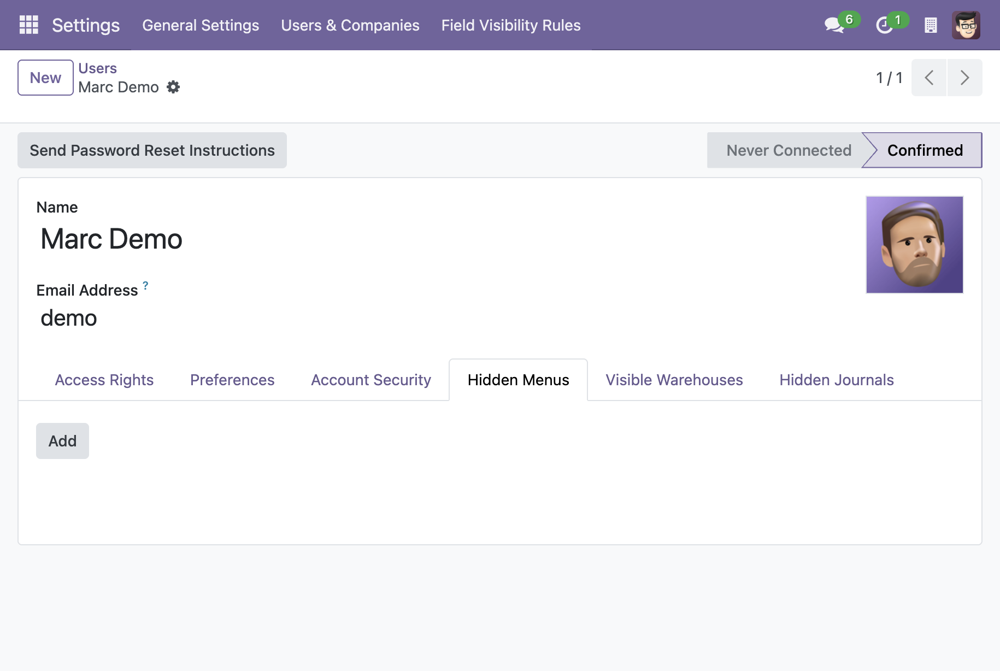
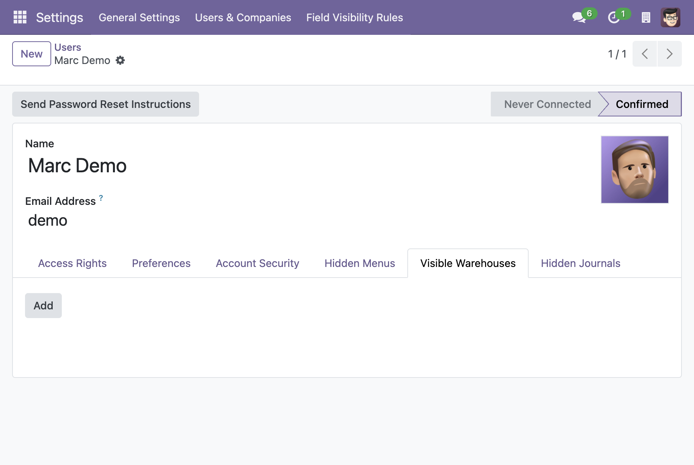
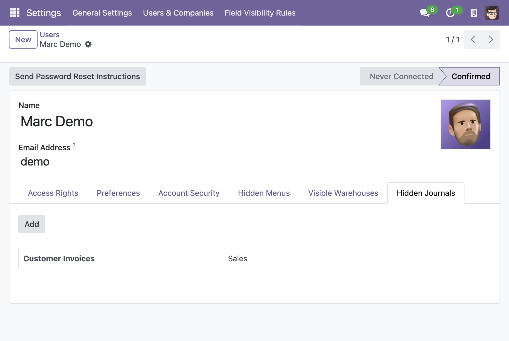
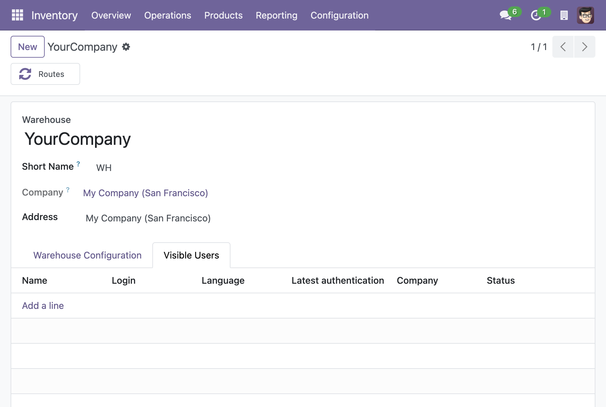
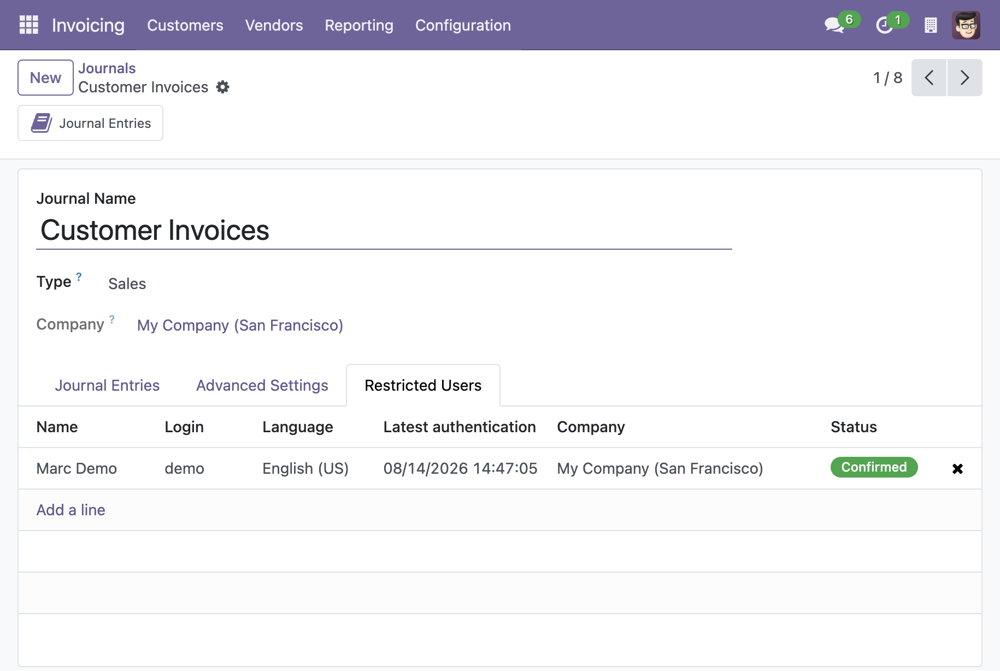

Give administrators one place to manage per-user visibility in Odoo. Pick menus, form fields and list columns directly from the interface, then choose who should not see them. Configure warehouse operations and accounting journal access from dedicated control lists.

System administrators can turn on Visibility from the top bar. Move over a field or list column and click to open its user selector. Search internal users, select all internal users, or clear the selection. The selected-user count updates as you work.
For nested menus, click a parent once to open its submenu. Double-click or Alt-click a parent to select that menu itself. Apply an empty selection to clear an existing restriction.


Open Settings > Visibility Control to review menu and field rules. Field rules show the model, field, selected users and user count. Open a rule to edit it; archive or delete it with standard Odoo controls.
Menu restrictions stay synchronized between the menu and user records. System administrators always retain visibility.
Visibility lists switch to readable cards on phones and keep sortable tables on desktop. User selectors wrap to fit smaller screens, and the field picker keeps its actions within reach.
Add operators to the Warehouse Visibility group and assign the warehouses they may access. Group members only see receipts, deliveries, internal transfers, stock moves and move lines belonging to their assigned warehouses. An empty assignment means no warehouse operations are visible to that group member.


Choose restricted users on each journal or from the central Hidden Journals list. Restrictions also cover journal entries and journal items on the server, including reads through reports and API calls.
Menu and field rules control interface visibility. Hiding a field does not block access to its value through exports, reports, RPC or other server-side access. Use Odoo access rights and record rules when a field's value is confidential. Warehouse and journal restrictions are enforced on the server for the records listed above.
Databases using Odoo Point of Sale can install the companion flous_menu_visibility_pos add-on. It adds Hidden Points of Sale under Visibility Control, hides restricted configurations from the POS dashboard, and blocks direct launches. Close active sessions before applying restrictions.


Warehouse and journal assignments are available from their records as well as the central visibility lists. Both sides stay synchronized.